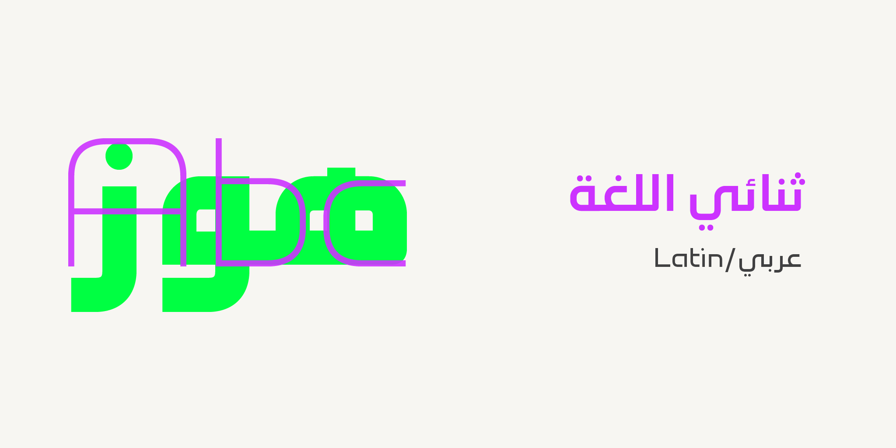
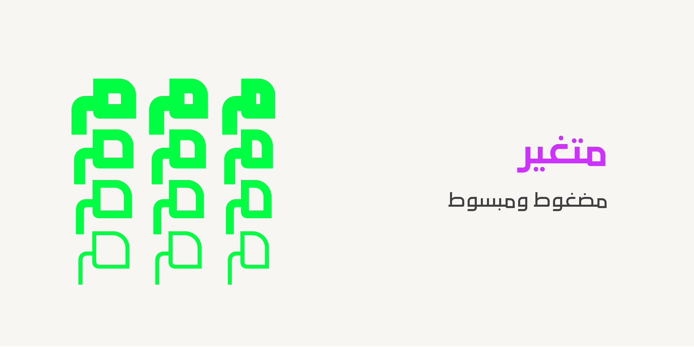
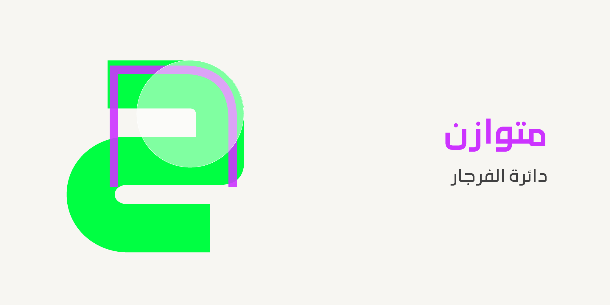

Firjar is a contemporary Kufic-inspired and minimalist bilingual typeface, covering both Arabic and Latin scripts with precision and harmony. Its name means compass in Arabic. The naming reflects the typeface design philosophy of flexibility and balance.
The concept of Firjar design is inspired by the compass's capabilities, which are designed using quarter-circled curves combined with clean straight lines.
The typeface spans a wide range of styles, from condensed to extended widths and from thin to black weights, making it highly versatile for bold headlines, branding, user interfaces, editorial design, and display applications. Firjar has the following axes:
wght axis spans Thin (100) to Black (900)wdth axis spans Condensed (75) to Expanded (125)The Firjar project is led by Mestara Type a type foundry specialized in creating and designing Arabic typefaces. Founded by a professional calligrapher and designer, Mestara aims to reflect the beauty, and modernity while respecting traditional calligraphic principles.
To contribute, see github.com/MestaraType/Firjar.


